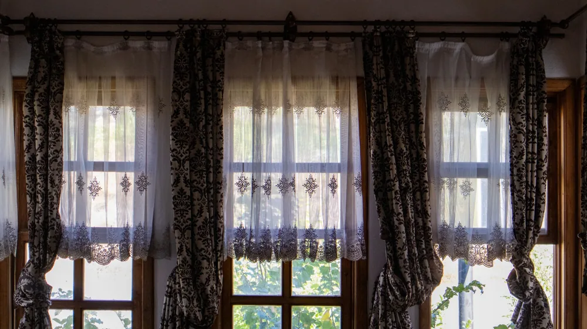

커튼 vs 블라인드, 우리 집에 딱 맞는 창문 가리개 선택 가이드
사진: Jan van der Wolf / Pexels (무료 이미지, 출처 표기)
커튼과 블라인드의 기본적인 차이점

창문 가리개를 고를 때 가장 먼저 떠올리는 것은 커튼과 블라인드입니다. 이 둘은 창문 햇빛 조절과 사생활 보호라는 공통된 기능을 하지만, 작동 방식과 심미적 특성에서 분명한 차이를 보입니다. 커튼은 주로 패브릭 소재로 제작되어 좌우로 열고 닫는 방식이며, 블라인드는 다양한 소재의 얇은 날개(슬랫)나 원단이 상하로 움직이거나 기울어지는 구조입니다.
이러한 기본적인 차이는 인테리어 스타일에 미치는 영향, 빛 조절의 정밀함, 그리고 관리 방식에까지 큰 영향을 줍니다. 어떤 종류를 선택하느냐에 따라 실내 분위기가 완전히 달라질 수 있으므로, 각 제품의 특성을 이해하는 것이 중요합니다.
커튼의 매력과 단점: 분위기 연출과 관리
커튼은 공간에 부드럽고 아늑한 분위기를 더하는 데 탁월합니다. 다양한 색상, 패턴, 질감의 패브릭을 활용해 따뜻하거나 화려한 인테리어를 연출할 수 있습니다. 특히 이중 커튼은 암막과 속지 커튼을 함께 사용해 채광과 사생활 보호를 더욱 효과적으로 조절할 수 있다는 장점이 있습니다.
하지만 커튼은 블라인드에 비해 부피가 크고, 먼지가 쌓이기 쉬워 정기적인 세탁이나 관리가 필요합니다. 세탁 주기는 환경에 따라 다르지만, 일반적으로 6개월에서 1년에 한 번 정도 전체 세탁을 권장합니다. 또한, 완전히 열었을 때 창가 양쪽에 주름이 잡히는 형태로, 블라인드처럼 깔끔하게 정리되는 느낌은 덜합니다.
커튼의 주요 장점
- 공간에 따뜻하고 포근한 분위기 연출
- 다양한 디자인과 소재 선택의 폭이 넓음
- 방음 및 단열 효과가 블라인드보다 우수함
- 이중 커튼으로 채광과 사생활 보호 조절 용이
커튼의 주요 단점
- 정기적인 세탁 및 관리가 필요함
- 먼지 흡착 우려가 있음
- 블라인드보다 공간을 많이 차지함
- 완전히 열었을 때 깔끔한 정리감 부족
블라인드의 장점과 아쉬운 점: 실용성과 디자인
블라인드는 모던하고 깔끔한 인테리어를 선호하는 분들에게 인기가 많습니다. 심플한 디자인과 직선적인 형태로 공간을 넓어 보이게 하는 효과가 있습니다. 특히 블라인드의 얇은 날개(슬랫)를 조절하여 외부 시선을 차단하면서도 미세하게 빛을 들일 수 있어, 빛 조절의 정교함이 커튼보다 뛰어나다는 장점이 있습니다.
그러나 블라인드는 소재에 따라 차이가 있지만, 패브릭 커튼만큼 뛰어난 방음이나 단열 효과를 기대하기는 어렵습니다. 또한, 각 슬랫이나 원단 사이사이에 먼지가 쌓일 경우 닦아내야 하는 번거로움이 있을 수 있습니다. 종류에 따라 초기 설치 비용이 커튼보다 높을 수도 있습니다.
블라인드의 주요 장점
- 모던하고 깔끔한 인테리어 연출에 용이
- 빛 조절과 외부 시선 차단이 정교함
- 공간을 효율적으로 사용 가능 (창문 면적을 적게 차지)
- 청소가 비교적 간편 (먼지 제거 용이)
블라인드의 주요 단점
- 커튼만큼의 방음 및 단열 효과는 기대하기 어려움
- 슬랫 손상에 주의 필요 (특히 알루미늄 블라인드)
- 패브릭 커튼 대비 디자인 선택 폭이 좁을 수 있음
- 일부 제품은 먼지가 끼기 쉬운 구조
우리 집 스타일에 맞는 현명한 선택 가이드
커튼과 블라인드 중 무엇을 선택할지는 집의 전체적인 인테리어, 원하는 기능, 그리고 관리의 편의성을 종합적으로 고려해야 합니다. 다음은 각 상황에 따른 추천 가이드입니다.
- 거실: 개방감을 중시한다면 블라인드가 좋고, 아늑하고 풍성한 느낌을 원한다면 커튼이 적합합니다. 이중 커튼이나 콤비 블라인드(두 가지 원단으로 빛 조절)를 활용해 채광을 효율적으로 관리할 수 있습니다.
- 침실: 숙면을 위해 암막 기능이 중요하다면 암막 커튼이나 암막 롤스크린이 좋습니다. 은은한 빛을 선호한다면 우드 블라인드나 얇은 속지 커튼을 고려해볼 수 있습니다.
- 주방 및 욕실: 습기에 강하고 오염 시 청소가 쉬운 블라인드(알루미늄 블라인드, PVC 블라인드)가 효율적입니다. 세탁이 번거로운 커튼은 피하는 것이 좋습니다.
- 아이 방: 디자인적인 요소를 중요하게 생각한다면 캐릭터 커튼이나 밝은 색상의 블라인드가 좋습니다. 안전을 위해 줄이 없는 코드리스 블라인드를 선택하는 것도 좋은 방법입니다.
커튼 vs 블라인드 주요 특징 비교 (2026년 8월 기준)
설치와 관리, 그리고 비용 문제
창문 가리개를 선택할 때는 초기 설치와 더불어 장기적인 관리, 그리고 예산을 고려해야 합니다.
설치: 커튼은 커튼봉이나 레일을 설치해야 하며, 블라인드는 창틀이나 벽에 브라켓을 고정해야 합니다. 직접 설치가 어렵다면 전문 업체의 도움을 받는 것이 좋습니다. 창문 크기나 형태에 따라 맞춤 제작이 필요한 경우도 많으므로, 정확한 실측이 중요합니다.
관리: 커튼은 주기적으로 세탁해야 하지만, 블라인드는 종류에 따라 마른 헝겫이나 청소솔로 먼지를 털어내거나 부분적으로 닦아내는 방식으로 관리합니다. 특히 습기가 많은 공간에는 방수 기능이 있는 블라인드를 선택하는 것이 위생적입니다.
비용: 2026년 8월 기준으로, 커튼과 블라인드 모두 소재, 디자인, 브랜드, 창문 크기에 따라 가격대가 매우 다양합니다. 일반적으로는 저렴한 원단의 커튼이나 기본적인 롤스크린이 가장 합리적인 선택지가 될 수 있습니다. 맞춤 제작이나 고급 소재를 선택할 경우 비용이 상승합니다.
커튼과 블라인드를 함께 활용하는 전략
하나만 선택하기 어렵다면, 커튼과 블라인드를 함께 사용하는 '레이어드' 방식을 고려해볼 수 있습니다. 예를 들어, 창가에는 블라인드를 설치하여 정밀한 채광 조절과 깔끔한 느낌을 주고, 그 바깥쪽에 커튼을 설치하여 공간에 부드러운 분위기와 추가적인 단열 효과를 더하는 방식입니다.
이러한 조합은 기능과 미적인 요소를 동시에 만족시킬 수 있는 효과적인 방법입니다. 아침에는 블라인드로 햇살을 조절하고, 저녁에는 커튼을 닫아 포근하고 안락한 공간을 연출하는 등 상황에 맞춰 유연하게 활용할 수 있습니다. 공간의 특성과 개인의 취향에 따라 창문 가리개를 조합하여 최적의 인테리어를 완성해보세요.
🔗 이 글도 함께 보면 좋아요: 원룸 인테리어, 예산 50만원부터 200만원까지 현실 가이드
관련 추천 상품
이 포스팅은 쿠팡 파트너스 활동의 일환으로, 이에 따른 일정액의 수수료를 제공받습니다.